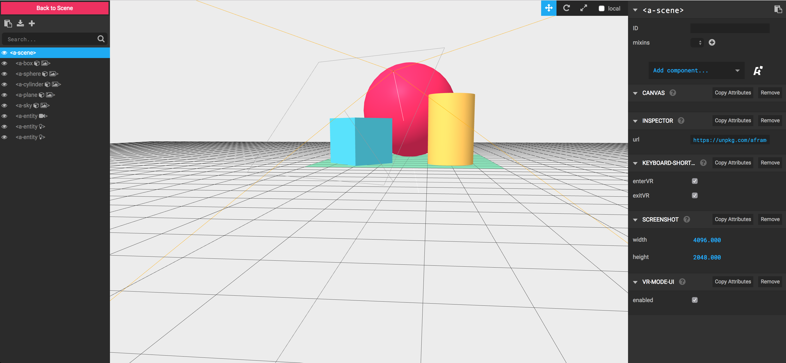
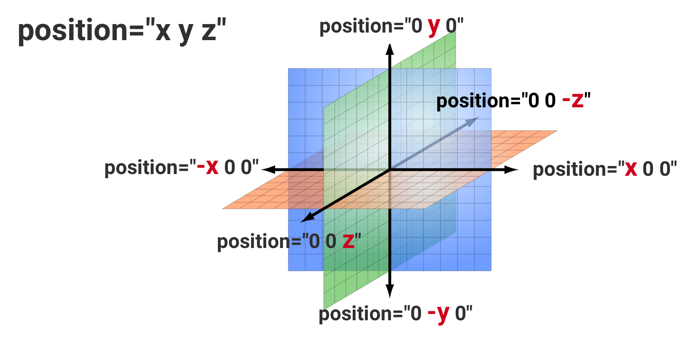
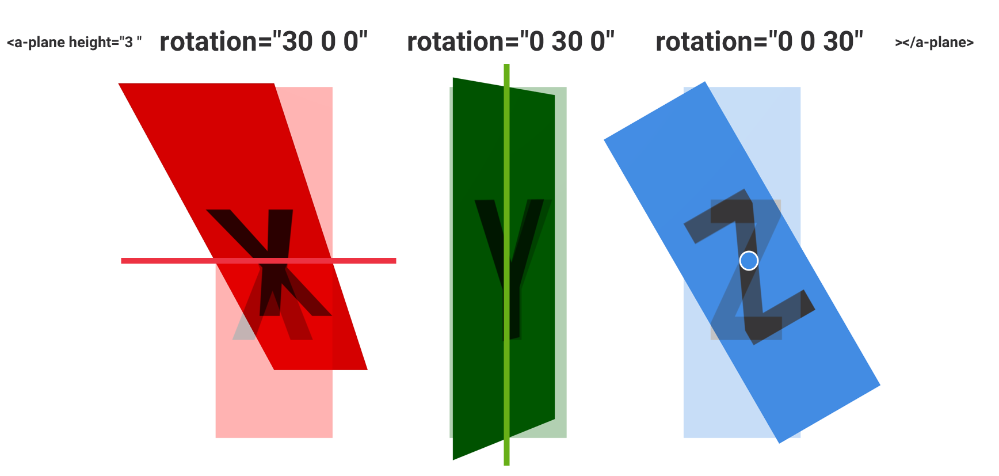

A-Frame Beginners Workshop
An introduction to WebVR
Berlin - 10.08.2017
By Andrès Cuervo & Stefanie Doll
WebVR API
- Detect VR devices and query their capabilities
- Check if the device supports the presentation mode
- Poll the device’s position and orientation
- Display and re-render imagery
on the device
Browser Support

Microsoft Edge
Chrome for Android
Firefox
Chromium

Samsung Internet
Oculus Carmel

Servo
WebVR Polyfill
Supported devices
Other Browser API's involved
WebGL
Web Audio
Gampad
Speech
WebRTC

Geolocation
and more...
A-Frame
Is a javascript framework for building VR experiences on the web.
- It's cross-platform ...
- easy to use ...
- and easy to extend!
Entity-Component-System
Entity is an empty container
<a-entity>
Components add a certain apperance, behaviour and/or functionality
System provides the global scope
<a-scene >
Entity Box = Geometry + Material + Position
Entity Ball = Geometry + Material + Position + Velocity + Physics
<a-scene>
Setup of repetitive tasks & components needed
- WebGL & WebVR setup
- Canvas setup
- Default camera & lightning
- Initializes scene rednering and re-rendering
- It loads three.js and webvr-polyfill.js
</a-scene>
Entities, components and primitives
Entities and components
Primitives
Lesson 1
Go to: https://berlin-aframe-workshop.glitch.me/
and click on the link for Lesson 1.
A-Frame inspector
ctrl + alt + i
Geometries
It provides a basic shape for an entity
Materials — Color
It gives appearance to an entity
Positioning & Rotation
Right-handed coordinate system

Position component
Position component
It places entities at certain spots in 3D space
Position is relative to <a-scene> or the parent-element.
Rotation component
It defines the orientation of an entity
Positioning & Rotation
#### Some other things to know: - default position for entities is "`0 0 0`" - the default camera position is "`0 1.6 0`" - Position is relative to a-scene or to the parent element
Positioning & Rotation
(nested (positioning))
Images and Videos as material
- 360 videos
- equirectangular images
- Texture/ Tiles
2, 4, 8, 16, 32, 64, 128, 256, 512, 1024, 2048, 4096
Importing 3D objects
You can use 3D-Objects in your A-Frame scenes.
Exports from Unity, Blender, Google Blocks, Sketchfab (...) and shared ressources.
Suppoerted file-types
- COLLADA files (.DAE)
- GL Transmission Format (.glTF)
- Wavefront (.obj & .mtl)
Use together with the scale component
Example: Google Blocks Import
Models by "Anna dream brush" & Timothy 'YM' Johnson
Assets
<a-assets> – <a-assets-item>
- A-Frame has a built-in Asset Management System
- Better performance because of caching, preloading & reuseability
- Images, videos, 3D-Models, audio
Mixins
<a-mixin>
- To reuse self-defined sets of component properties
Assets & Mixins – Code example

Animations
Lesson 3
Try to rebuild this scene!
Got back to the course overview and follow the links for Lesson 3.
A Brief Note: Components!
See a pattern?
A-Frame is built on the concept of components:
Javascript that hooks into the component lifecycle (`init`, `tick`, `remove`, etc.).
Allows you to define more complicated behavior to make custom interactions, materials, & more!
A Tiny Component
AFRAME.registerComponent('my-color', {
schema : {
color : { default : '#DDAADD' }
},
init : function () {
this.el.setAttribute('material', 'color', this.data.color)}});
`my-color`
Interactions
// info different controllers
// example with look-controls